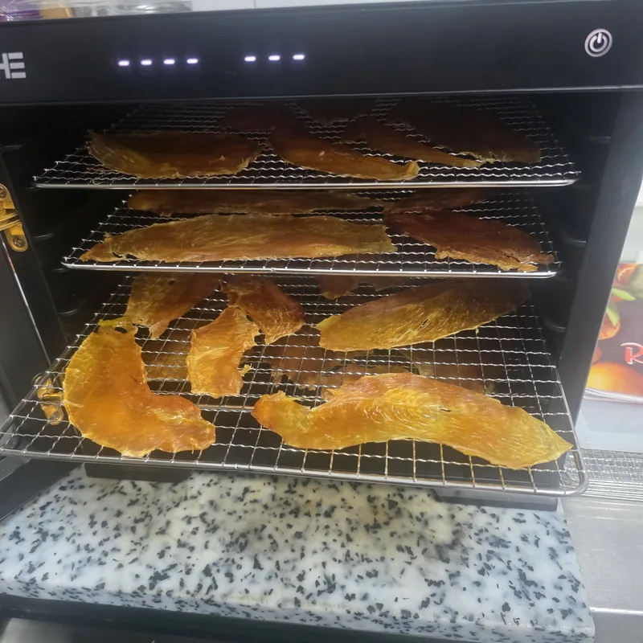
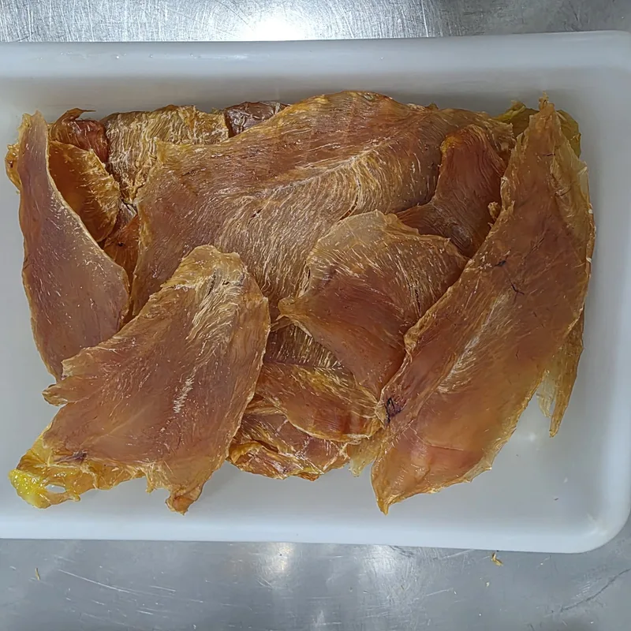

Hace tiempo que nos pedíais un premio que encajara con la forma de comer BARF: sencillo, de un solo ingrediente y fácil de llevar en el bolsillo. Aquí está el primero.
Un snack monoproteico: un solo ingrediente
Monoproteico quiere decir que lleva una sola proteína animal. En este caso, pechuga de pollo de pasto de buena calidad, la misma que elegimos para la carnicería. No lleva sal, azúcares, harinas, colorantes ni conservantes: solo pollo.
Al tener un único ingrediente, sabes exactamente qué come tu perro o tu gato. Si tu veterinario te ha pedido limitar las proteínas que toma, es fácil comprobar si este snack encaja.
Cómo lo hacemos: secado lento a baja temperatura
Cortamos la pechuga en filetes finos, los colocamos en las bandejas de la deshidratadora y los dejamos secar durante horas a 70 °C, con aire caliente. No se fríe ni se hornea a alta temperatura: simplemente pierde el agua poco a poco.

El resultado es una lámina fina, ligera y dorada, que se parte fácilmente con los dedos en trocitos del tamaño que necesites.
Qué aporta: propiedades y nutrientes
Al quitarle el agua, lo que queda es la pechuga concentrada. Y la pechuga de pollo es una de las carnes más completas y ligeras:
- Proteína de alta calidad: la pechuga es carne magra con proteína de alto valor biológico, la que el cuerpo de tu perro o tu gato usa para mantener sus músculos.
- Muy poca grasa: es de los cortes más magros del pollo, una buena opción si cuidas su peso.
- Vitaminas del grupo B: sobre todo niacina (B3) y B6, que intervienen en cómo el organismo aprovecha la energía de la comida.
- Minerales: como fósforo, selenio y potasio.
- Sabor intenso: como no añadimos nada, no hay sabores artificiales que tapen el de la carne. Es pollo, y huele a pollo.
Al secarse lentamente y sin freír ni hornear, conserva buena parte de lo que tiene la pechuga fresca, en un formato ligero y fácil de llevar.
Para educar, premiar y reforzar
- Educar: en las sesiones de aprendizaje (sentado, quieto, venir a la llamada) va bien un premio pequeño y muy apetecible. Trocéalo en pedacitos para poder repetir tantas veces como haga falta.
- Premiar: después de un buen paseo, al cortarle las uñas, al cepillarlo o al volver del veterinario.
- Reforzar: para mantener lo aprendido, sobre todo los primeros meses o con animales adoptados que todavía están cogiendo confianza.
- Complemento habitual: unos trozos en su plato de cada día, para variar y darle un extra de proteína.
- Gatos: dáselo en trocitos muy pequeños, como premio o junto a su comida.
Ventajas de un premio tan natural
- Un solo ingrediente, sin aditivos ni conservantes.
- Pollo de pasto de calidad, preparado en nuestra carnicería de Andorra la Vella.
- Encaja con la alimentación BARF: carne de verdad, no galletas con harinas.
- Ligero y práctico para llevar en la bolsa del paseo.

Consejos para darlo
- También en su comida diaria: al ser pollo magro y sin aditivos, puedes dárselo como premio o añadir unos trozos a su ración. Cuéntalo dentro de lo que come al día y calcula la cantidad con la calculadora BARF.
- Agua fresca siempre: es un alimento seco, así que deja el bebedero lleno. Te lo explicamos en BARF e hidratación.
- Vigílalo mientras come, sobre todo si tiende a tragar sin masticar.
- Alergias o dieta especial: consulta antes con tu veterinario.
BARFEAND es un alimento complementario para perros y gatos. Para una alimentación equilibrada, complétalo con los suplementos recomendados (como aceites ricos en omega 3) y consulta con tu veterinario.
Lo que viene
Este es solo el primero. Estamos preparando más snacks naturales deshidratados y los iremos presentando aquí. Mientras tanto, puedes ver nuestras recetas BARF o escribirnos por WhatsApp al +376 678 536 si quieres saber cuándo estarán a la venta.